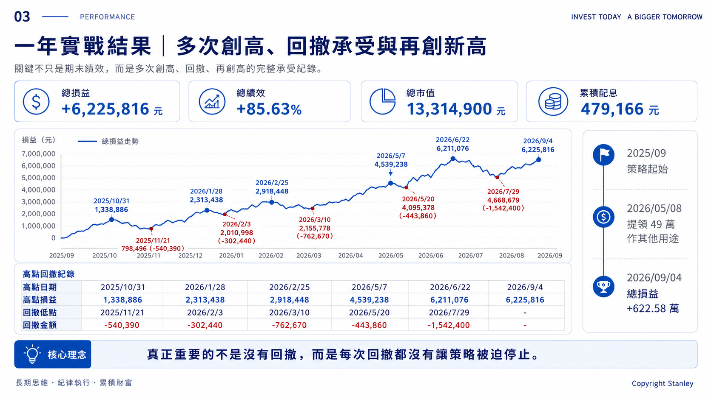
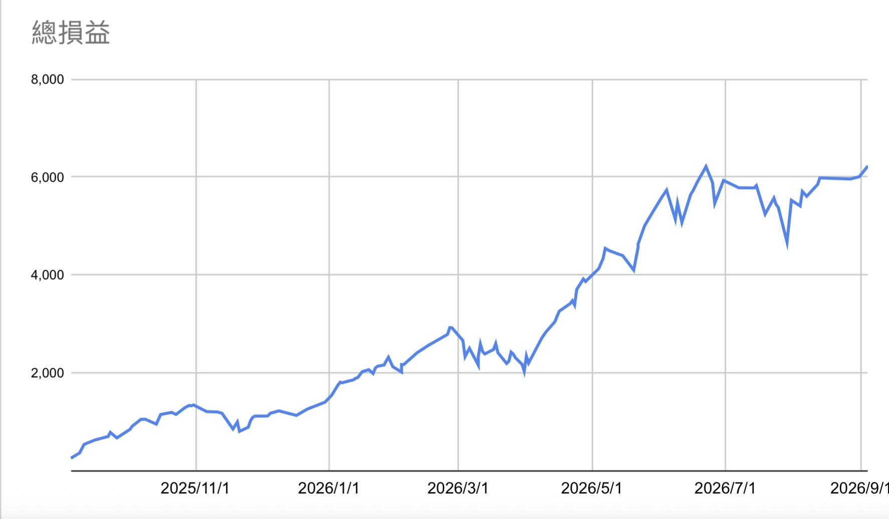

創高、回撤、再創高
最終績效只是一個結果；真正能證明策略撐得住的，是中間一次又一次的回撤紀錄。

總績效 +85.63%，總市值 13,314,900 元，累積配息 479,166 元。
高點不是終點，回撤也不是失敗
一年裡，資產不是一路直線往上，而是反覆經歷「創高 → 回撤 → 再創高」。這些回撤，才真正檢驗一套策略能不能撐住。
2025/10/31：1,338,886 → 798,496，回撤 -540,390
2026/01/28：2,313,438 → 2,010,998，回撤 -302,440
2026/02/25：2,918,448 → 2,155,778，回撤 -762,670
2026/05/07：4,539,238 → 4,095,378，回撤 -443,860
2026/06/22：6,211,076 → 4,668,676，回撤 -1,542,400
2026/09/04：6,225,816，再創新高

建立自己的投資紀錄系統
我認為長期投資不能只留下「現在賺多少」這個結果。真正有價值的是，把每一次重要變化記錄下來，讓未來的自己可以回頭檢查：當時為什麼加碼、為什麼沒有賣、資產怎麼變化，以及風險是否仍在原本設定的範圍內。
日期：每一次更新的時間點
總市值：目前整體資產規模
總損益／總績效：看資產成長，也看回撤幅度
累積配息：把現金流與資本利得分開觀察
單次損益變化：記錄每一次明顯上漲或下跌
重大事件：例如加碼、質押、提領、賣出或調整資產配置
這樣做的目的，不是每天盯盤，而是建立一套可以回顧的決策紀錄。當市場大跌或大漲時，人很容易只記得當下情緒；有完整紀錄，才能把「感覺」變成「可檢查的事實」。
不一定要使用複雜工具。Google Sheet、Excel 或任何你能長期維持的方式都可以。重點不是表格做得多漂亮，而是每次資產與策略發生變化時，都留下足夠資料，讓自己未來有能力檢討。
最大的一次回撤：154.24 萬
2026/6/22 總損益一度來到 621.11 萬，之後到 7/29 回落至 466.87 萬，這一段回撤約 154.24 萬。
如果只看那個時間點，很容易產生「先賣掉保住獲利」的衝動。但如果原本的投資邏輯沒有改變，而且資金結構仍然撐得住，真正重要的是不要讓短期回撤改變長期策略。
2026/5/8 曾提領 49 萬作其他用途。也就是說，後續曲線並不是一個完全封閉、沒有資金流出的帳戶，這點在解讀績效時必須一起看。